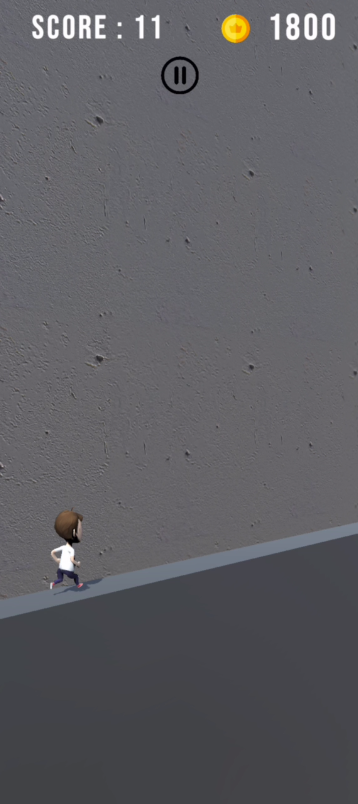
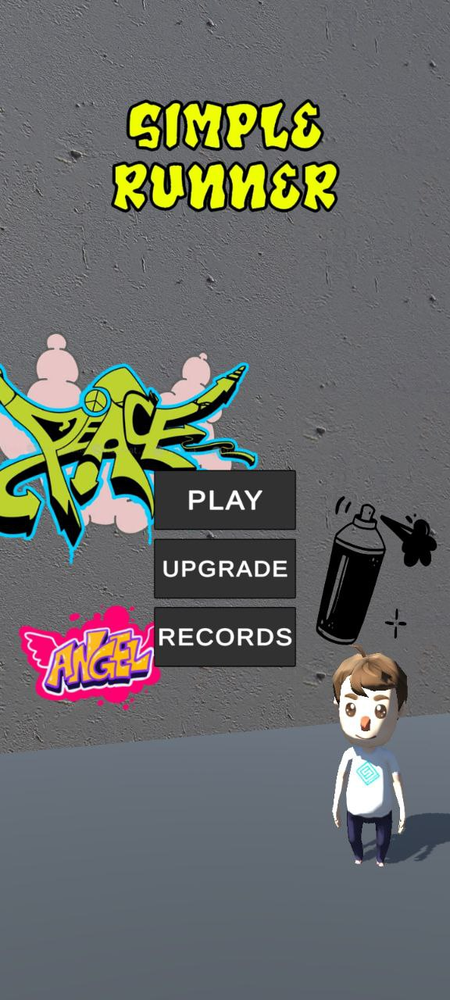
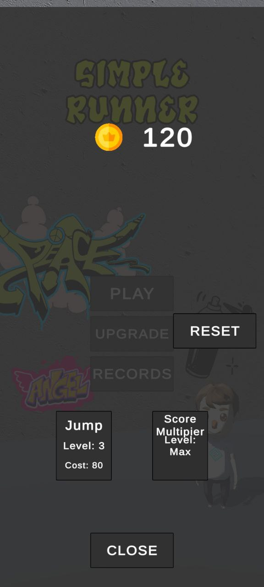
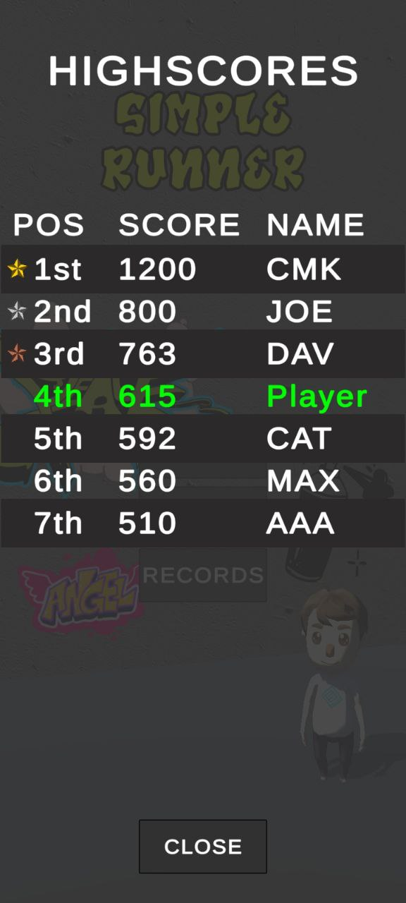
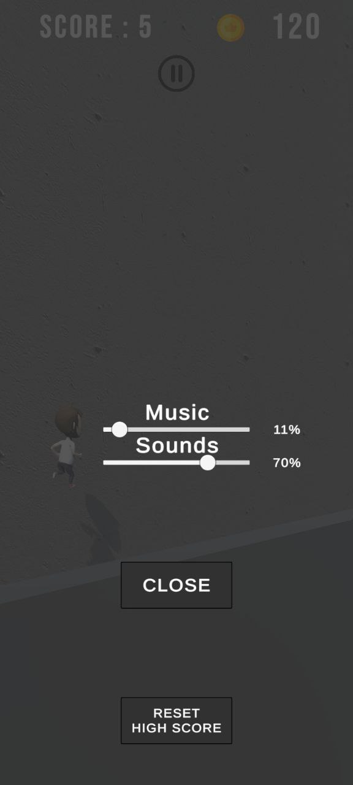

Genre
Endless Runner
Engine
Unity 2022.3.0f1
Language
C#
Platform
Android
Project Type
Gameplay system project
Complexity
Medium
Focus
Core Gameplay / Spawning / UI / Android
Overview
SimpleRunner is a mobile endless runner focused on fast reaction, obstacle avoidance, coin collection, score progression and increasing difficulty over time.
The player controls a character that runs forward automatically and must react to obstacles, traps and collectibles using simple mobile-friendly tap input.
The project was built as a complete Android-ready arcade gameplay loop with gameplay UI, pause/restart flow, high score saving and lightweight systems suitable for a small mobile project.
What I Implemented
- Complete endless runner gameplay loop with automatic forward movement
- Tap-based jump controls designed for mobile gameplay
- Obstacle, trap and coin interaction logic using collision and trigger events
- Score, coin counter and high score tracking
- Difficulty scaling through gradual speed increase during the run
- Randomized obstacle spawning to improve replayability
- Gameplay UI, pause menu, restart flow, settings and high score screens
- Persistent high score saving using PlayerPrefs
- Android build preparation and mobile-oriented scene setup
Technical Case Study
Technical decisions
- Kept the runner loop simple and readable: automatic forward movement, tap jump input and collision-driven gameplay events
- Used randomized obstacle / coin spawning to increase replayability without overcomplicating the project structure
- Stored high score and basic player settings with PlayerPrefs for a lightweight mobile portfolio build
What problems I solved
- Balanced speed scaling so the run becomes harder while staying readable on mobile
- Handled obstacle, trap and coin interactions through clear collision / trigger logic
- Built a complete restart, pause and high-score flow instead of leaving the project as a prototype
Result
- Finished Android-ready endless runner with a complete gameplay loop
- Clear example of mobile input, scoring, progression and UI flow implementation
- Project demonstrates practical Unity gameplay fundamentals suitable for junior Unity roles
Project Links
Gameplay Media




